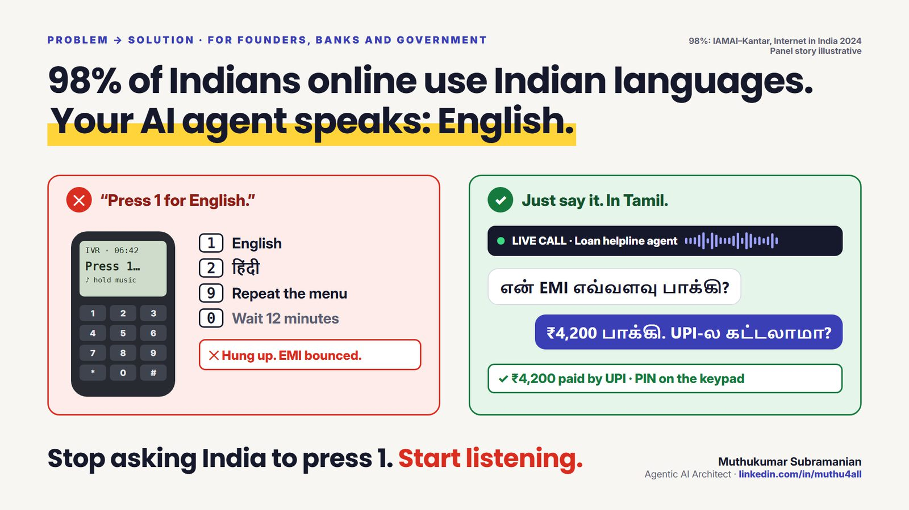
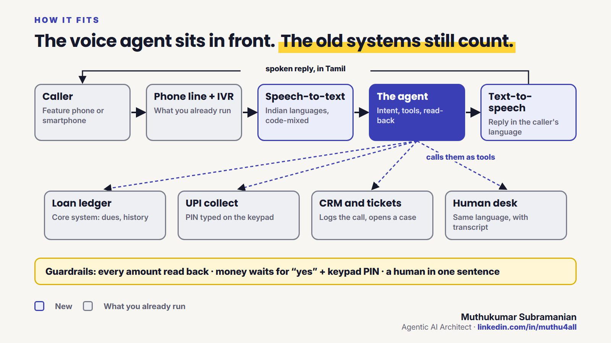
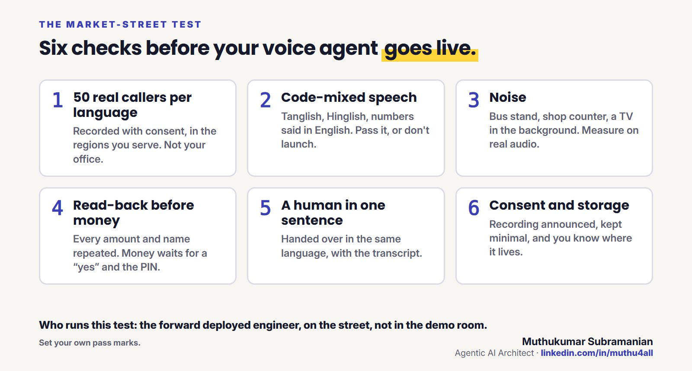

Your AI Agent Speaks English. Your Next Crore Customers Don't.
By Muthukumar Subramanian · Agentic AI Architect

Thanjavur, 7.40 in the morning.
Selvi runs a small tailoring shop and pays a two-wheeler loan to an NBFC. Her EMI is due today. She calls the number from the SMS.
"Press 1 for English. Press 2 for Hindi."
She presses 9 to hear it again. Then again. Then she hangs up and goes back to her machine. The EMI bounces. A ₹500 bounce charge lands on her account, and next week a collections agent rides out on a bike to ask her for money she was trying to pay. (Selvi is a composite, and the numbers are illustrative.)
At head office, the dashboard records it as "call abandoned".
The same NBFC launched an AI agent last quarter. It's very good. It lives in a chat window, and it speaks English.
The problem: we built AI for the people who already type
Here's the number that should change your roadmap. The IAMAI and Kantar Internet in India 2024 report counted 886 million active internet users, and 98% of them accessed content in Indian languages.
Now look at most AI agents being launched: an English chat box, a typing-first flow, a "Hi! How can I help you today?"
And underneath them sits the IVR, designed for the machine's convenience. Press 1. Press 2. Enter your 16-digit loan number. Selvi has no patience for that at 7.40 AM.
So the customers who most need help get the worst service, and the business pays for it twice: once in failed collections and lost orders, and again in call-centre minutes and field visits.
My slightly contrarian view: the keyboard was always the wrong interface for most of India. Voice AI is the first technology that can fix that, and most companies are using it to build another chat box.
The solution: a voice-first agent that can actually do things
Not a talking FAQ. An agent on a phone call that listens, understands and acts on the old systems you already run.
→ 1. Listen the way people speak. Speech recognition tuned for Indian accents and code-mixing. Real callers say "என் EMI எவ்வளவு பாக்கி?" with English words in the middle of Tamil. That's normal, not an error.
→ 2. Understand the intent, not the menu. "My EMI", "kist", "the loan payment" all mean the same thing. No tree of options.
→ 3. Act through the old systems. The agent calls your loan ledger, booking system or CRM as tools. It doesn't replace the IVR or the call centre. It sits in front of them.
→ 4. Read back before money moves. "₹4,200 is due. Shall I send a UPI request?" The PIN is never spoken; it's typed on the keypad.
→ 5. Hand over to a person, in the same language. With the transcript, so the caller never repeats their story.
Talk is the interface. The old system still does the counting.

The plumbing already exists, and much of it is Indian
→ BHASHINI, MeitY's language platform, offers translation and speech services. In February 2026, MeitY launched VoicERA on it at the India AI Impact Summit: an open-source voice AI stack for speech-to-text, text-to-speech, conversational AI and telephony.
→ AI4Bharat at IIT Madras released IndicVoices: 7,348 hours of speech from 16,237 speakers in 145 districts, across all 22 scheduled languages, according to their 2024 paper.
→ NPCI's Hello! UPI brought voice payments to UPI in 2023, starting with Hindi and English, including an on-call channel for UPI 123PAY on feature phones. You still enter the PIN on the keypad.
On top of that, you can pick from the whole ecosystem: Indian speech models like Sarvam's, Google Cloud and Microsoft Azure speech services, open models you host yourself, and a reasoning model from OpenAI, Anthropic, Google or an open-weights family to run the agent. Mix them. Don't marry one.
👉 [GIF: B-day12-4-in-article-tamil-to-upi.gif]
Caption: One call in Tamil: the question becomes text, the agent checks the loan, reads the amount back, and UPI does the rest.
The person who makes it work: the forward deployed engineer
The demo always works. It's recorded in a quiet room, in clean Hindi.
The real call comes from a Madurai bus stand, in Tanglish, or from a parent in Bihar switching between Bhojpuri and Hindi mid-sentence.
This is where a forward deployed engineer (FDE) earns their salary: an engineer who works on site with the customer's team and ships the agent on their real systems. For voice, "on site" means the market street. They record real calls (with consent), find that "EMI" is said four different ways, and fix the agent before launch, not after the complaints. You'll also see "voice conversation designer" and "AgentOps engineer" used for parts of this work. The titles are still settling.

The hard parts
→ Dialects and code-mixing. "Tamil" isn't one voice. Chennai, Madurai and Coimbatore sound different, and almost everyone mixes in English. Test per region, not per language.
→ Noise. Lab accuracy can drop a lot on the street. Measure on real recordings.
→ A wrong action is costlier on voice. There's no screen to show "Are you sure?". So the agent reads back every amount and name, and money waits for an explicit "yes" plus the keypad PIN.
→ Consent and recordings. You're recording voices, which is personal data under India's DPDP Act. Announce it, keep it minimal, and know where it's stored.
→ Cost per minute. A voice call costs more than a chat message. Use it where the money is: collections, orders, claims, scheme help. Not for "what are your timings?".
The opportunity
→ For banks and NBFCs: voice agents for EMI reminders and collections in the borrower's language. Even a small drop in bounced EMIs pays for a lot of minutes.
→ For government: scheme helplines and grievance lines that answer in the caller's language, built on public stacks like BHASHINI and VoicERA.
→ For founders: voice agents for kirana ordering, clinic bookings, crop advice and claims. The moat is field data, not the model.
→ For IT services firms: "Indian-language QA" as a service, with panels of real speakers across regions, plus FDEs who ship voice agents into old call centres.
The next crore customers won't learn your menu. Your agent has to learn their language.
Your turn 👇
For India's next crore customers, which interface wins: voice or text? Pick one.
Tag the person in your team who still thinks "Hindi and English" covers India.